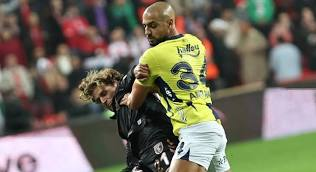

HAKKINDA
Bu blog, futbolun sadece bir aktivite değil, aynı zamanda yaşamın vazgeçilmez bir parçası olduğuna inananlar için bir platform sunmayı hedefliyor. futbol, yalnızca fiziksel sağlığı değil, aynı zamanda zihinsel ve duygusal iyilik halini de destekleyen güçlü bir unsurdur. Burada, futbolun farklı disiplinlerini keşfederken, okuyucuları bilgilendirmeyi ve motive etmeyi amaçlıyoruz.
futbol dünyasında sürekli değişen trendler, teknikler ve gelişmeler var. Amacımız, bu değişimleri takip ederek, okuyucularımızı güncel bilgilerle donatmak ve sporun her alanında farkındalık yaratmaktır. Maç analizleri, oyuncu profilleri, antrenman stratejileri ve sporcuların başarı hikayeleri gibi içeriklerle, her seviyeden spor tutkununa hitap eden bir kaynak oluşturmak istiyoruz.
Aynı zamanda, sporun birleştirici gücünü vurgulamak ve topluluk oluşturmaya katkıda bulunmak da önemli bir hedefimiz. Okuyucularımızın deneyimlerini paylaşabileceği, tartışmalara katılabileceği ve birbirlerinden ilham alabileceği bir ortam yaratmak istiyoruz.
Sonuç olarak, bu blog; futbol sevgisini yaymayı, bilgi paylaşımını teşvik etmeyi ve okuyucularımızı futbolun heyecan dolu dünyasında yolculuğa çıkarmayı amaçlamaktadır. Haydi, futbolun gücünü birlikte keşfedelim!
Kanarya'ya samsunda şok

Thomas reis'in öğrencileri son dakikalarda soner aydoğdu ile beraberliği buldu ve fenerbahçe'yi şampiyonluk yarışında yaraladı zirve ile 1 maç eksiği olmasına rağmen puan farkı 8'e yükseldi.fenerbahçe puanını 17'ye yükseltirken samsunspor 19 puana yükseldi
Attığı gol öyle böyle değil, Victor Osimhen resmen havada asılı kaldı
Sarı kırmızılılar'da 78. dakika oyuna İcardi yerine bir başka dünya yıldızı Victor Osimhen oyuna girdi. Oyuna girdikten 1 dakika sonra golü bulan Osimhen ofsayta takıldı ve gol sayılmadı. Başarılı golcü, uzatma dakikalarında muhteşem bir rövaşata golü atarak skoru 3-0'a getirdi ve maç da bu skorla tamamlandı.
Manchester city'den son dakika vurgunu
Molineux Stadyumu'nda oynanan karşılaşmada Manchester City deplasmanda Wolverhampton'ı 90+5'te bulduğu golle 2-1 yenmeyi başardı.
Pep Guardiola'nın ekibine 3 puanı getiren golleri 33'te Josko Gvardiol ve 90+5'te John Stones kaydetti.
Wolverhampton'ın tek sayısı ise 7. dakikada Jörgen Strand Larsen'den geldi.
Ligde üst üste 2. galibiyetini elde eden Manchester City puanını 20 yaptı ve maç fazlasıyla liderliğe yükseldi, kötü bir sezon geçiren Wolves ise 1 puanla ligde 20. ve son basamakta yer aldı.
Juventusun açamadığı kapıyı lazio açtı
Serie A'nın 8. maçında Juventus ve Lazio, Allianz Arena'da karşılaştı.
İlk yarının golsüz geçtiği maçta sessizlik 85. dakikada bozuldu. Lazio'lu Gila'nın kendi kalesine attığı golle Juventus maçı 1-0 kazandı.
Ligde yoluna namağlup devam eden Juventus puanını 16 yaptı. Lazio ise 13 puanda kaldı.
Milli futbolcu Kenan Yıldız mücadelede 90 dakika süre aldı.
İngiltere Milli Takımı'nda Thomas Tuchel dönemi
İngiltere Futbol Federasyonu, milli takım teknik direktörlük görevine Thomas Tuchel'in getirildiğini açıkladı.
İngiltere'de Tuchel dönemi
Ocak 2025'te görevine başlayacak
Tuchel'in ilk milli takım görevi
NE OLDU? 2024 Avrupa Futbol Şampiyonası sonrası Gareth Southgate ile yollarını ayıran İngiltere Milli Takımı'nda yeni teknik direktör belli oldu. İngiltere Futbol Federasyonu, milli takım teknik direktörlük görevine Thomas Tuchel'in getirildiğini açıkladı.
Jürgen Klopp, Red Bull futbol grubuna başkan oldu
Teknik direktörlüğü bıraktığını açıklayan Jürgen Klopp, Red Bull futbol grubunun ‘küresel başkan’ı oldu.
1 Ocak 2025’ten itibaren görevine başlaması beklenen Alman hoca, Red Bull’a ait futbol takımlarının bütün süreçlerini yönetecek.
Red Bull futbol grubunda Almanya’dan RB Leipzig, Avusturya’dan FC Red Bull Salzburg, ABD’den New York Red Bulls, Brezilyadan Red Bull Brasil ve Red Bull Bragantino takımları bulunuyor.
Red Bull Klopp’un, ‘günlük operasyonlara dahil olmayacağını ancak Red Bull felsefesini ilerletmek için stratejik bakış sağlayacağı’nı duyurdu.
Buna ek olarak Klopp, organizasyonun küresel transfer operasyonuna ve antrenörlerin eğitimine de katkıda bulunacak.
Klopp imzanın ardından şunları söyledi:
“Görevim değişmiş olabilir ama futbola ve bu oyunu bu hale getiren insanlara olan tutkum değişmedi. Rolümü öncelikle Red Bull kulüplerinin antrenörleri ve yönetimi için bir akıl hocalığı olarak görüyorum ama nihayetinde benzersiz, yenilikçi ve ileriye dönük bir organizasyonun parçasıyım.”
‘Sözleşmesindeki özel madde’
NTV’nin aktardığına göre Jürgen Klopp’un sözleşmesinde Almanya Milli Takımı’ndan teklif gelmesi durumunda ayrılmasına olanak sağlayan bir madde var.
Klopp’un teknik direktörlüğü bıraktığını söylemesine rağmen sözleşmesindeki bu madde dikkat çekti.